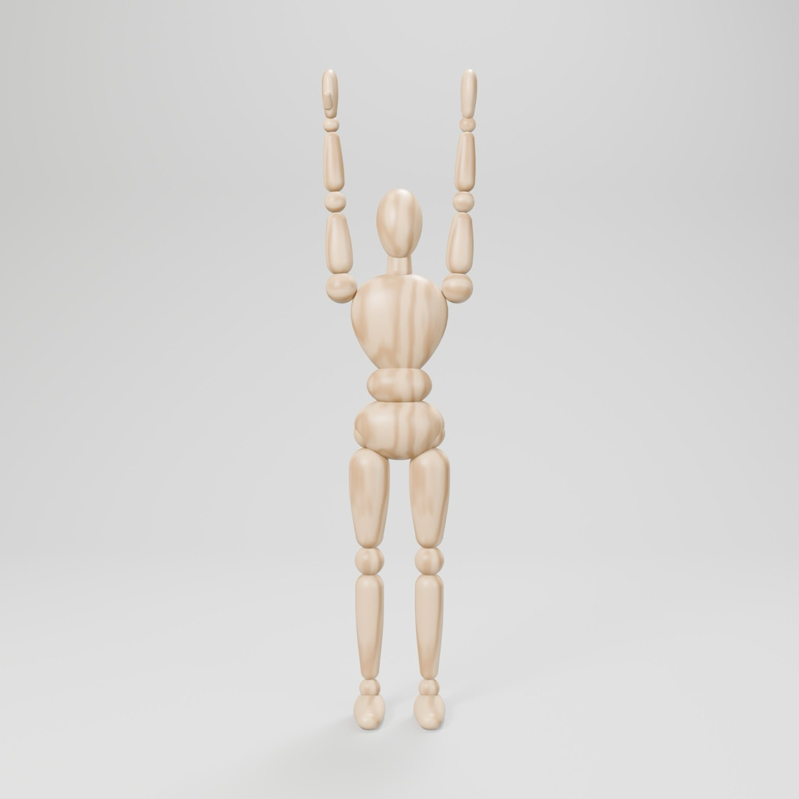
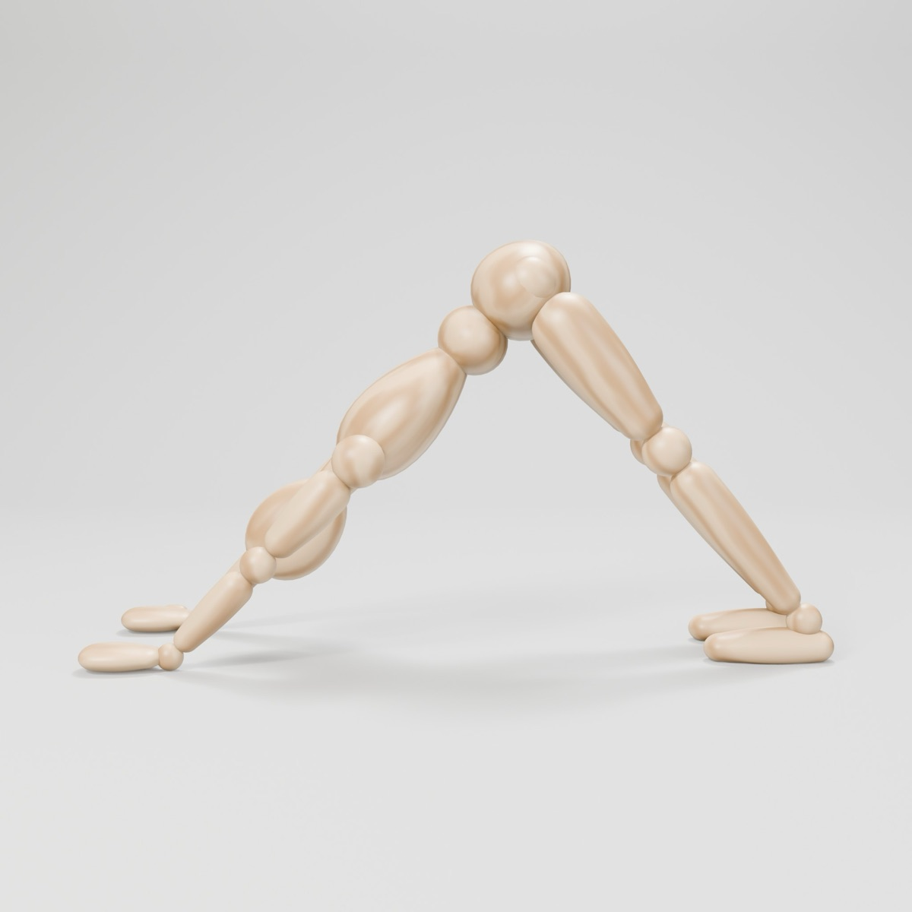
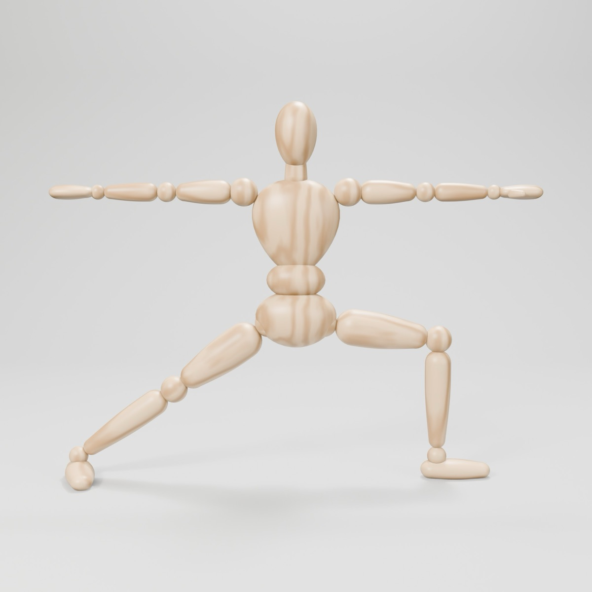
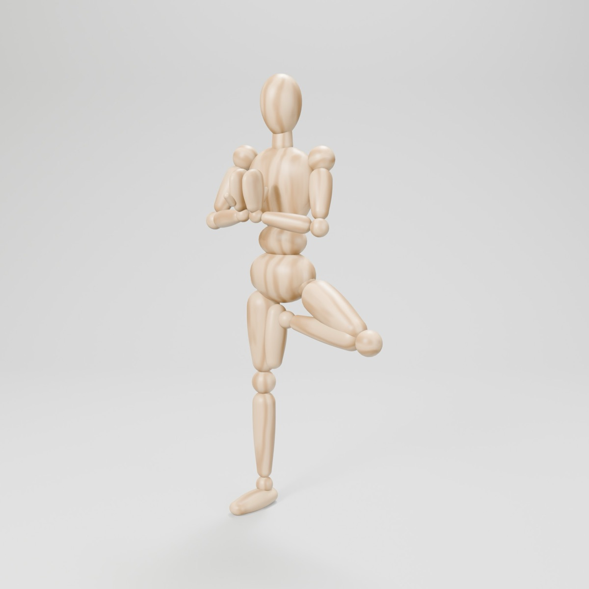
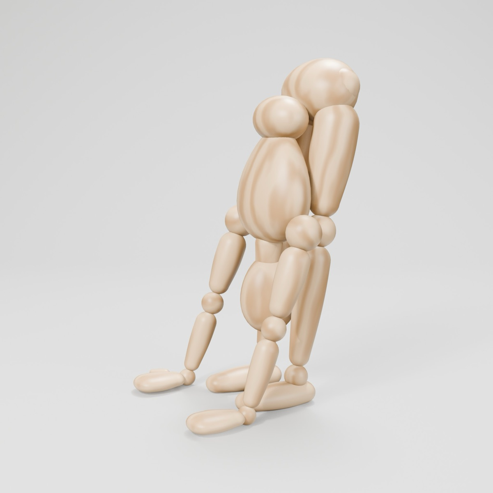
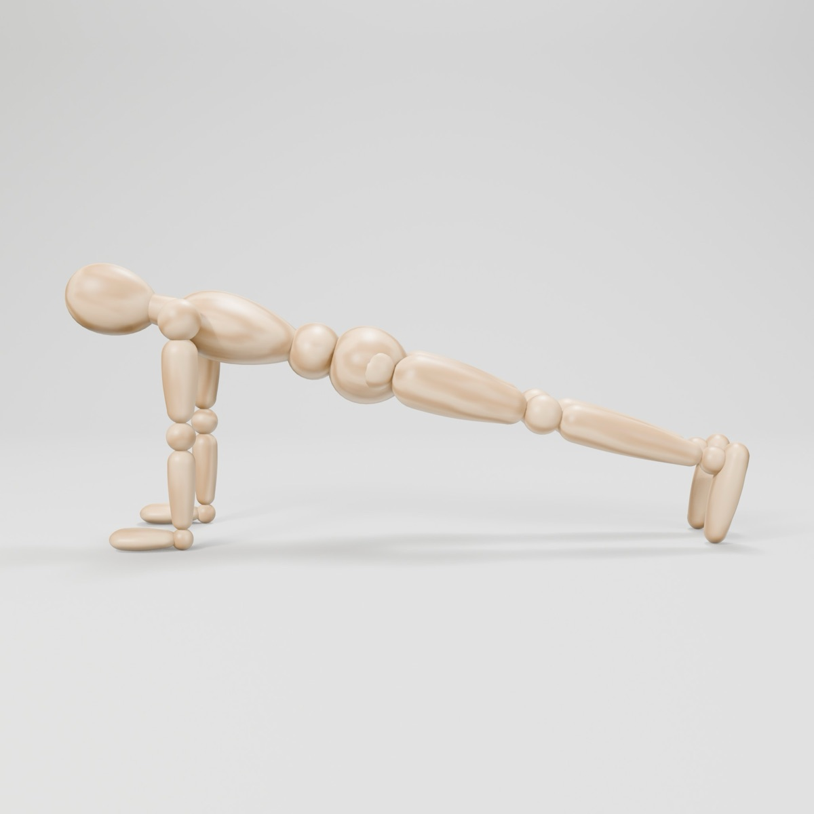
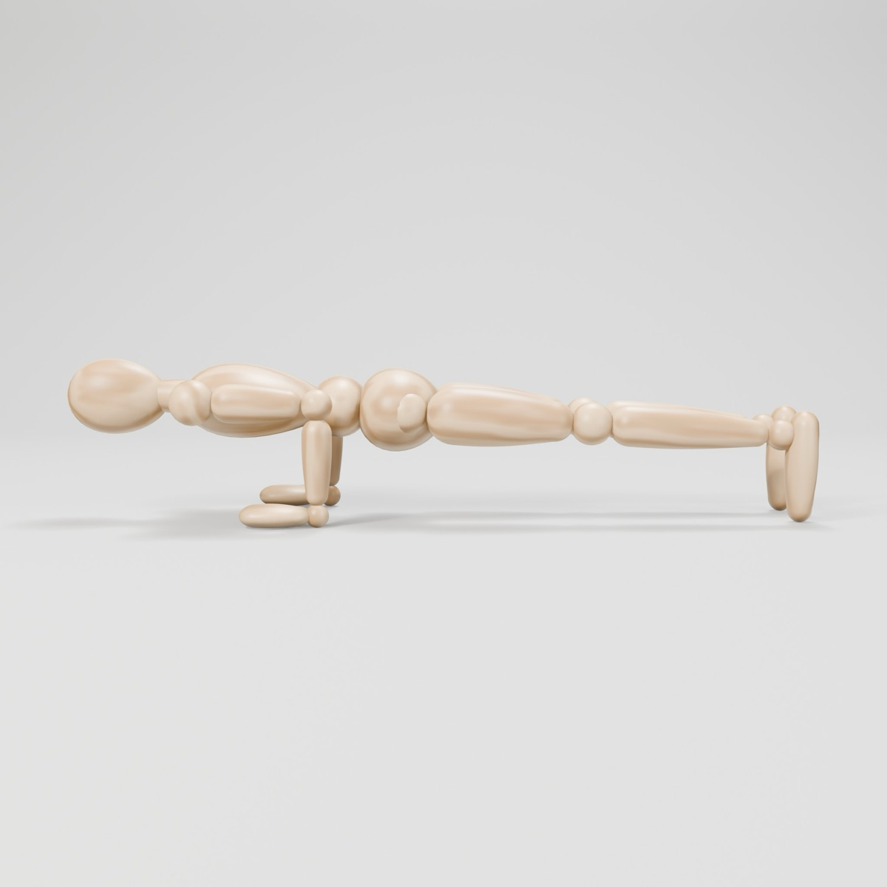
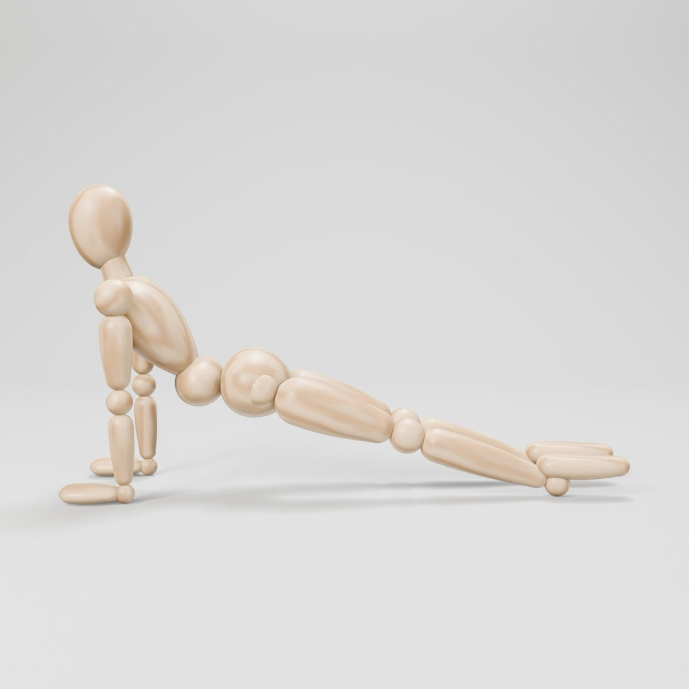

Ten Wyoga poses rendered as still pictures of a classic wooden artist's mannequin: the four wake-up missions (Upward Salute, Down Dog, Warrior II, Tree) and the six steps of Wyoga's Sun Salutation (Upward Salute, Forward Fold, Plank, Chaturanga, Upward Dog, Down Dog). There is no person in any picture and no drawing by hand: every pose is built from numbers and rendered by Blender. This page shows how, with the prompts, so you can repeat it or take it further.
All 16 pictures in full size (Google Photos album)
2048 x 2048 originals in the album (front or side view plus a 3/4 view of each pose); here 1200 px.








Everything was written and run by Claude Code (Anthropic's coding agent) on a Mac, as Python scripts for
Blender 5.2 run headless (Blender -b --factory-startup -P script.py: no window, no clicking). The
agent writes a script, renders, looks at the result images itself, and corrects the script until the poses are right.
All the code is public: github.com/markoboskoauroville/SKELETON.
Measured on the posed skeleton (degrees; 180 = straight). Hip = angle shoulder centre, hip, knee; shoulder = angle hip, shoulder, elbow; torso = tilt of the hip-to-shoulder line from vertical.
| Pose | Torso | Knee L / R | Hip L / R | Elbow L / R | Shoulder L / R |
|---|---|---|---|---|---|
| Upward Salute | 1 | 180 / 180 | 169 / 169 | 179 / 179 | 173 / 173 |
| Down Dog | 136 | 180 / 180 | 83 / 83 | 180 / 180 | 169 / 169 |
| Warrior II (left leg in front) | 0 | 98 / 180 | 109 / 136 | 180 / 180 | 101 / 101 |
| Tree (standing on the right) | 0 | 21 / 180 | 125 / 169 | 77 / 77 | 34 / 34 |
| Forward Fold | 158 | 180 / 180 | 18 / 18 | 180 / 180 | 170 / 170 |
| Plank | 75 | 180 / 180 | 169 / 169 | 180 / 180 | 75 / 75 |
| Chaturanga | 87 | 180 / 180 | 169 / 169 | 91 / 91 | 11 / 11 |
| Upward Dog | 54 | 180 / 180 | 160 / 160 | 180 / 180 | 55 / 55 |
(Hip 169 in the straight poses, not 180, because the hip joints sit a little in front of the line from the root to the shoulders on this mannequin.) The five floor poses are also in the app's pose file as 2D side-view keypoints with spoken cues: data/poses.json.
.skel.json file: time, 2D and 3D joints per frame, body height. The format: docs/skel-format.md.skelclean): fixes left/right swaps, removes outliers, fills gaps, filters jitter (One Euro, forward and backward), keeps bone lengths constant, limits knees and elbows, locks feet on the floor, with presets such as yoga-hold. A recording can also be exported for a Claude cleanup and imported back with checks.These are the instructions that produced the mannequin and the poses, written so you can give them to Claude Code or any coding agent that can run Blender on your computer. Paste them in order.
Write a Python script mannequin.py for Blender 5.x, run headless (Blender -b --factory-startup -P mannequin.py), that builds a classic wooden artist's drawing mannequin and saves it as mannequin.blend. Body: egg-shaped head (no face), neck, egg-shaped chest wider at the shoulders, a waist piece, a pelvis block, tapered limb segments with a slight belly and rounded ends, ball joints at the shoulders, elbows, wrists, hips, knees and ankles, mitten hands (a flat paddle with a thumb), simple rounded feet with a flat sole. Build every part as a mesh of revolution (a profile turned around its axis) with smooth shading. Rest pose: T-pose, 1.75 m tall, facing -Y, its left on +X, soles on Z = 0. Material: procedural light beech wood, no image textures: a Wave texture (rings) distorted by noise for the grain, a colour ramp between a light and a darker beech tone, a small bump from the same grain, a thin clear coat. Skeleton: an armature inside the body with bones on Apple Vision's 17 3D joints (root, spine, centerShoulder, centerHead, topHead, left/right shoulder, elbow, wrist, hip, knee, ankle): pelvis root->spine, chest spine->centerShoulder, neck, head, and per side clavicle, upper arm, forearm, hand, hip, thigh, shin, foot. Parent every wooden part rigidly to one bone (parent type BONE, keep its world position), no skin weights, like a real mannequin. Studio: a light grey seamless cyclorama (floor curving up into a back wall), three soft disc area lights (key, fill, and a rim light placed high so its back side never draws a line on the wall), a camera, EEVEE. Render a front still and a 3/4 still of the rest pose, look at them, and fix anything that does not look like a classic wooden mannequin.
Write yoga_poses.py for Blender 5.x (headless) that opens mannequin.blend and renders still pictures of the mannequin in yoga poses.
For each pose, build 3D joint targets from the mannequin's own bone lengths: torso as directions of pelvis, chest, neck and head; straight limbs as directions; bent limbs with two-bone IK (root joint, target end joint, a pole direction for the knee or elbow). Pose the armature by aiming each bone from its joint to the next joint; take the torso's twist from the hip line and the shoulder line; give limbs the smallest rotation from where their parent carries them; give hands and feet explicit frames (finger/toe direction plus the direction the palm/sole faces). Compute every bone's basis matrix from the target pose matrices: basis = (parent_rest^-1 * rest)^-1 * parent_pose^-1 * pose.
Poses with hands and feet on the floor (Down Dog, Plank, Chaturanga, Upward Dog, Forward Fold): leave one angle free and solve it by bisection until the lowest point of the wooden hands and of the wooden feet are both on the floor. Then move the body so its lowest point is exactly on the floor.
Views: front and 3/4 for standing poses, side and 3/4 for floor poses. Turn the body, not the camera, so the camera always looks into the cyclorama; fit the camera distance to the body's outline. Render EEVEE, 128 samples with ray tracing, 2048 x 2048 JPEG quality 90, no text on the image, the pose name in the file name ("03 Warrior II - Virabhadrasana II (front).jpg").
Look at every picture yourself and check yoga alignment (straight lines, knee over ankle, wrists under shoulders, hands and feet on the floor, nothing floating or sunk). Fix and render again until every pose is correct.What each pose was built from (body facing -Y, left = +X; angles in degrees). Give this to the agent with prompt 2, or use it as target poses in your own app.
{
"upward-salute": {"view": "front", "torso": "vertical, chest lifted 2, head tilted back 17 (gaze up)",
"arms": "straight overhead, 4 out from vertical, palms facing each other", "legs": "straight, hip width, feet flat"},
"down-dog": {"view": "side", "arms_and_back": "one straight line, 46 below horizontal from the hips to the hands, head between the arms",
"legs": "straight, angle solved so hands and feet both touch (about 51 below horizontal)", "hip_angle": 83,
"hands": "flat, fingers forward", "feet": "flat, heels down"},
"warrior-2": {"view": "front", "front_leg": "left; thigh 8 below horizontal toward the side, shin vertical, knee over the ankle",
"back_leg": "straight, ankle at the same height as the front ankle (feet about 1.4 m apart)",
"front_foot": "points to the front of the mat", "back_foot": "turned in 15", "torso": "vertical, hips open to the front",
"arms": "horizontal, palms down"},
"tree": {"view": "front + 3/4", "standing_leg": "right, straight", "lifted_leg": "left; sole on the inner right thigh above the knee (ankle at 0.80 m), knee open to the side",
"hands": "palms together in front of the chest, fingers up", "torso": "vertical"},
"forward-fold": {"view": "side turned 28 to the front", "legs": "straight, vertical", "pelvis": "tilted forward, solved (about 136 from upright) until the palms reach the floor",
"spine": "chest 38 more than the pelvis, head hanging", "arms": "reaching down, palms flat just in front of the feet"},
"plank": {"view": "side", "body": "one straight line from head to heels, angle solved (about 15 above horizontal)",
"arms": "straight, vertical, wrists under the shoulders", "hands": "flat, fingers forward", "feet": "toes tucked"},
"chaturanga": {"view": "side", "body": "straight, almost horizontal (about 3), low", "upper_arms": "along the ribs, horizontal",
"elbows": 90, "forearms": "vertical", "feet": "toes tucked"},
"upward-dog": {"view": "side", "arms": "straight, vertical, shoulders over the wrists",
"spine": "pelvis 16, chest 50, neck 72, head 86 above horizontal (a back bend)", "legs": "straight, thighs off the floor, angle solved (about 18)",
"feet": "tops of the feet on the floor"}
}Write render_mannequin.py for Blender 5.x (headless): Blender -b --factory-startup -P render_mannequin.py -- --in X.skel.json --out X.mp4. Read a recording of Apple Vision 3D joints (root-relative metres, y up), convert to Blender Z-up, resample on the output frame grid from the timestamps, fill missing frames by interpolation, smooth over 3 frames. Turn the body to face the render camera the way the person faced the real camera (decide from the 2D points), check chirality on the knees (knees bend forward), mirror if the app showed a mirrored picture. Scale the mannequin to the recorded body height. Per frame aim every bone at the next joint (torso twist from hip and shoulder lines, limbs by the smallest swing, feet flat), keep the mannequin's bone lengths, keep the lowest foot on the floor, key quaternions per frame. Fixed front camera framing the whole movement, EEVEE, H.264 MP4 at the recording fps. Print PROGRESS n/N per frame and DONE path, or ERROR reason with a non-zero exit.